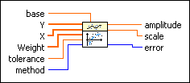
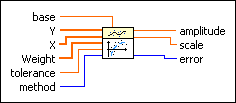

Logarithm Fit Coefficients VI
Owning Palette: Advanced Curve Fitting VIs
Requires: Full Development System
Returns the amplitude and scale of the logarithmic fit for a data set (X, Y).

 Add to the block diagram Add to the block diagram |
 Find on the palette Find on the palette |
Owning Palette: Advanced Curve Fitting VIs
Requires: Full Development System
Returns the amplitude and scale of the logarithmic fit for a data set (X, Y).

| Add to the block diagram |
Find on the palette |
 |
base specifies the base of the logarithm. The default is e, or the natural logarithm. | ||||||
 |
Y is the array of dependent values. Y must contain at least two points. | ||||||
|
X is the array of independent values. X must be the same size as Y. | ||||||
|
Weight is the array of weights for the observations (X, Y). Weight must be the same size as Y. Weight also must contain non-zero elements. If an element in Weight is less than 0, the VI uses the absolute value of the element. If you do not wire an input to Weight, the VI sets all elements of Weight to 1. |
||||||
|
tolerance determines when to stop the iterative adjustment of amplitude and scale when you use the Least Absolute Residual or Bisquare method. If the relative difference of the weighted mean error of the logarithmic fit in two successive iterations is less than tolerance, this VI returns the resulting amplitude and scale. If tolerance is less than or equal to 0, this VI sets tolerance to 0.0001. |
||||||
 |
method specifies the fitting method.
|
||||||
 |
amplitude returns the amplitude of the fitted model. | ||||||
|
scale returns the scale of the fitted model. | ||||||
 |
error returns any error or warning from the VI. You can wire error to the Error Cluster From Error Code VI to convert the error code or warning into an error cluster. |
This VI is similar to the Logarithm Fit VI but does not return the y-values or weighted mean error of the fitted model.